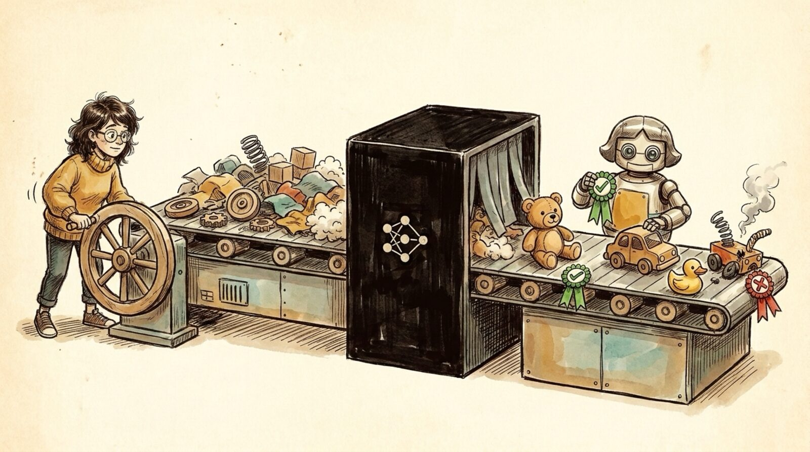

<section id="r07" data-transition="fade" style="background:#F5EEE0;color:#222222;font-family:Arial, Helvetica, sans-serif;padding:0;display:flex;flex-direction:column">

<aside>How you test a model: feed known inputs through the black box, grade outputs pass/fail. Evals = PRD + English test cases; the test suite is the spec.</aside>
</section>
